In this article, we will look at some of the most important commands in LLDB to debug applications.
If you have been following this blog series, you would have noticed that we have been using GDB until now for debugging applications, but the support for GDB has been disabled by Apple. Apple has compiled a very useful list of GDB to LLDB commands to get you up to date with debugging via LLDB that can be found here.
We will look at some of the most important commands after hooking into an application. In this case, lets start debugging the Twitter app. So make sure that the Twitter app is running in the foreground on the device and start a listener for the Twitter app.
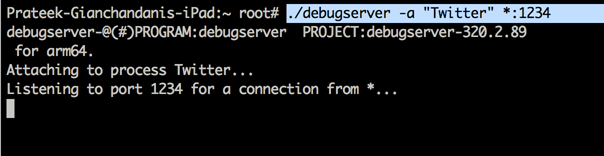
On your system, do the usual process of connecting to the debugserver application on the device to perform remote debugging. You can also use usbmuxd if you feel that debugging over Wifi is slow.
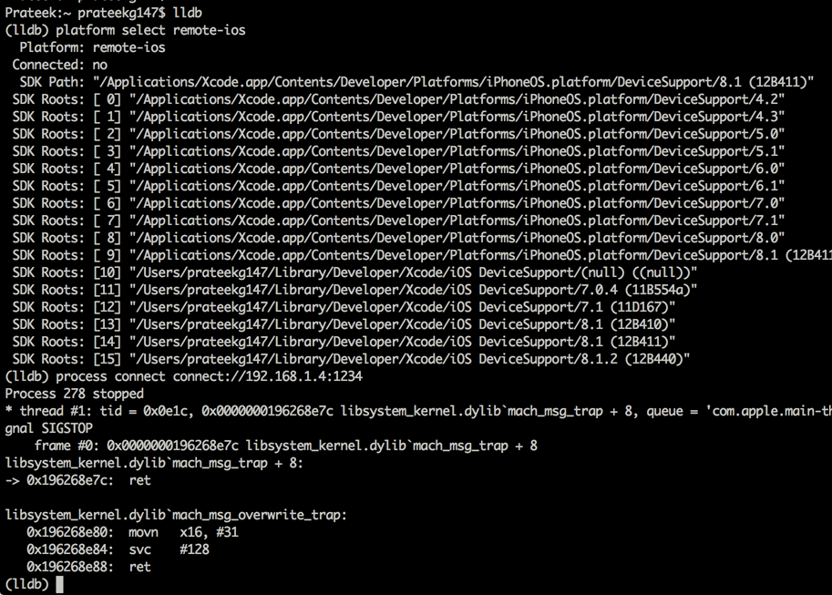
Once the connection has been established, you can now run debbugger commands to analyze the application. Let’s print out the AppDelegate object.
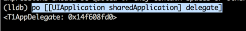
We can read registers using the register read command. To read all the registers, use the register read –all command.
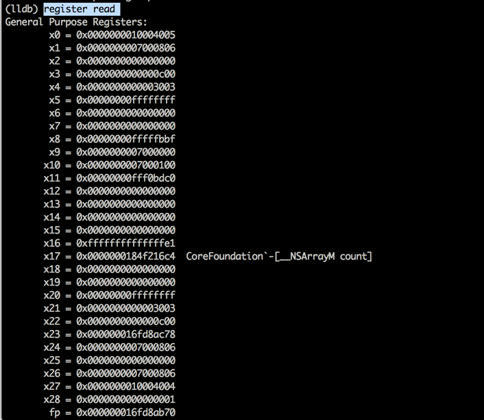
Note the difference in the registers ? It’s because of the new arm64 architecture for this application. Another important command is image list which will let you identify the location of the main executable and all the shared libraries.
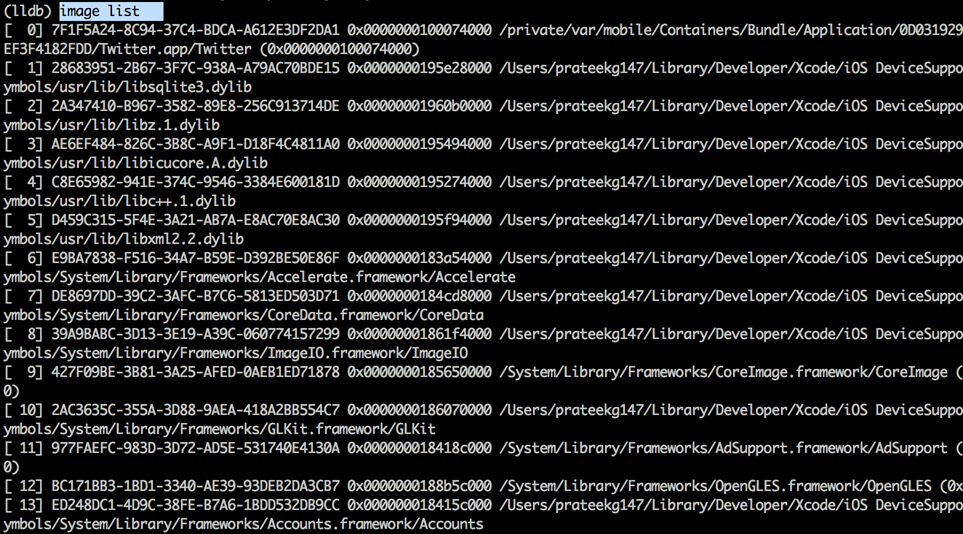
The image dump sections command will dump all the sections of the main executable and the shared libraries. You can later use this to dump information from the memory.
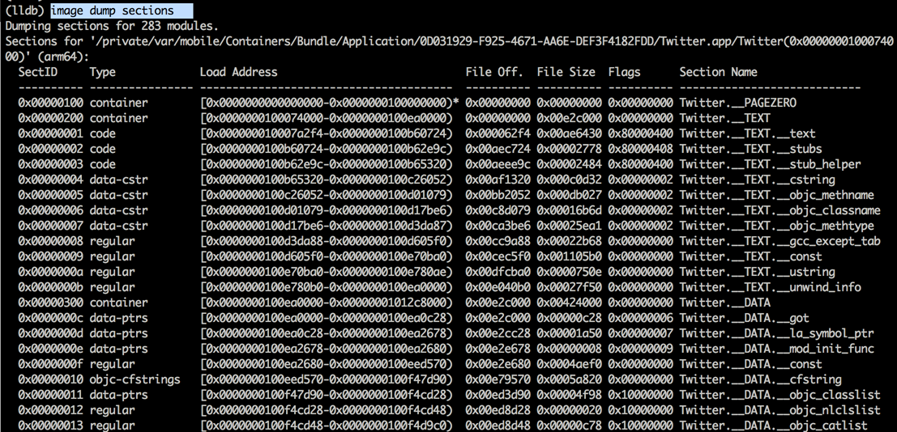
Setting a breakpoint is very similar to GDB. First, see if there are any breakpoints set using the br l. Then set a breakpoint for the objc_msgSend function using the b objc_msgSendcommand. Then, resume the application using the process continue command.
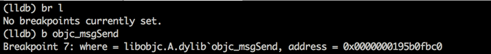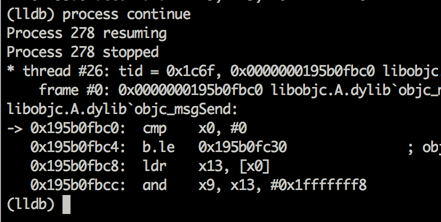
Once a breakpoint is hit, you can use the command di -f to see the disassembled code.
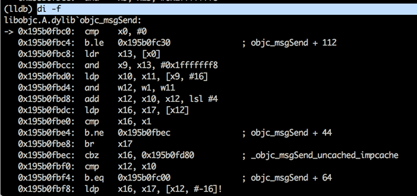
We can also configure LLDB to execute a command once every breakpoint is hit. This could be very handy in tracing method calls in the application. To do that, use the command target stop-hook add and enter the commands that you want to enter once the breakpoint is hit. In this case, i have asked LLDB to print out all the registers and continue the program execution.
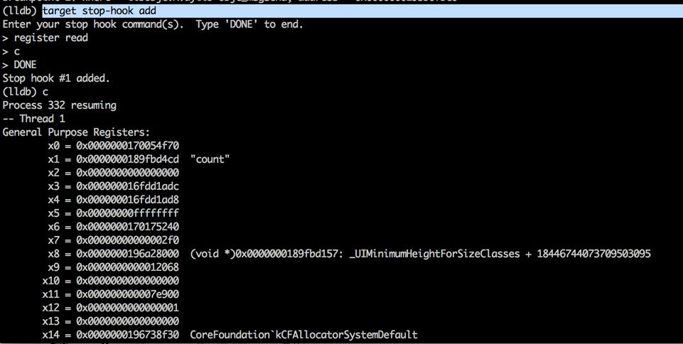
If you don’t understand the purpose of these registers right now, don’t worry. I will cover arm64 architecture in a later article.
It is usually a good idea to strip the debug symbols from the application binary before submitting to the App store. You can do this by going to Build Settings and set the option Strip Debug Symbols During Copy to Yes.
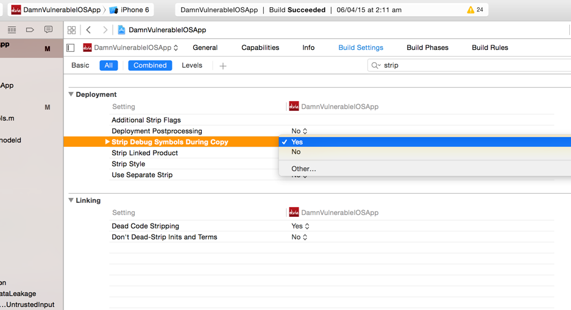
Hope you enjoyed this article. We have just scratched the surface of LLDB right now. In the next article, we will look at importing symbols from binaries and settings breakpoints on application specific methods.